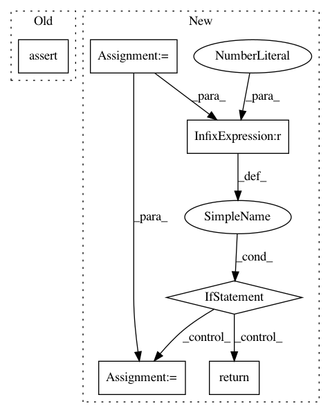

f7b10102a3a0b08272634347ff3a65efd3df18ce,test/functions/test_inv_matmul.py,TestInvMatmulNonBatch,test_inv_matmul_vec,#TestInvMatmulNonBatch#,35
Before Change
res.backward(gradient=grad_output)
actual.backward(gradient=grad_output)
self.assertLess(torch.max((self.mat_copy.grad - self.mat.grad).abs()).item(), 1e-3)
self.assertLess(torch.max((self.vec_copy.grad - self.vec.grad).abs()).item(), 1e-3)
def test_inv_matmul_multiple_vecs(self):
// Forward
with settings.terminate_cg_by_size(False):
After Change
return mat
def test_inv_matmul_vec(self):
mat = self._create_mat().detach().requires_grad_(True)
if mat.dim() > 2: // This isn"t a feature for batch mode
return
mat_copy = mat.detach().clone().requires_grad_(True)
mat_copy.register_hook(_ensure_symmetric_grad)
vec = torch.randn(mat.size(-1)).detach().requires_grad_(True)
vec_copy = vec.detach().clone().requires_grad_(True)
In pattern: SUPERPATTERN
Frequency: 3
Non-data size: 6
Instances
Project Name: cornellius-gp/gpytorch
Commit Name: f7b10102a3a0b08272634347ff3a65efd3df18ce
Time: 2019-04-04
Author: gpleiss@gmail.com
File Name: test/functions/test_inv_matmul.py
Class Name: TestInvMatmulNonBatch
Method Name: test_inv_matmul_vec
Project Name: IBM/adversarial-robustness-toolbox
Commit Name: aa47cfed2d57c6551a9a0132ace9b10d0b62421d
Time: 2018-01-18
Author: Maria-Irina.Nicolae@ibm.com
File Name: src/metrics.py
Class Name:
Method Name: empirical_robustness
Project Name: pfnet/optuna
Commit Name: a75735ba73983c48638bbe52d77997f24075a043
Time: 2020-11-04
Author: imamura@ms.k.u-tokyo.ac.jp
File Name: optuna/storages/_redis.py
Class Name: RedisStorage
Method Name: _update_cache